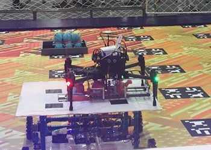

|
Shibo Zhao （赵世博）
Research Associate
|
Biography
I am currently a research associate at AIR lab, Robotics Institute, advised by Professor. Sebastian Scherer. Prior to that, I was supervised by Professor Zheng Fang and received my Master's degree from Northeastern University in 2019.
I am focusing on the simultaneous localization and mapping (SLAM) in some challenging environments. I am also interested in related topcis including multi-sensor fusion, deep learning.
Research Experience

|
Thermal-Inertial Odometry for Subterranean Environments
Department: Robotics Institute Tasks: Perception in visually degraded envionments This project is use thermal camera to achieve robust pose estimation for mobile robots in some challenging environments such as smoke and dust environments. [video] |
|
|
A Multi-State Constraint Kalman Filter for Vision-aided Inertial Navigation
The MSCKF_mono package is a mono version of MSCKF. The software takes in synchronized mono images and IMU messages and generates real-time 6DOF pose estimation of the IMU frame. [Project page] [Code] |

|
Auto Label Tool for Autonomous Car.
A tool used for automatic label the road sign. [Project page] [Code] |

|
An offline tool for pose-graph-optimization.
This tool can optimize the pose and eliminate the cumulative error. [Project page] [Code] |

|
Reconstruction of the scene based on RGBD-Camera.
It is a simple SLAM system based on RGBD-cameras. [Video] |
|
 |
DJI Robomasters Summer Camp.
This projects aims to design an autonomous MAV and a mobile robot that can grab the doll and place it in the bucket corresponding to the doll pattern. [News] [Video] |

|
Research on Real-time Location and Construction of Indoor Mobile Robots.
This robot is equipped by the relevant sensor itself can be in a completely unknown environment situation accurately draw the map of the surrounding environment. [Docs] [Video] |
Experiences
- June. 2018 - Aug. 2018 Research Intern, MIG Mobile Robot LAB, Tencent China
- Jul. 2017 - Feb. 2018 Research Intern, SLAM group, DeepMotion China
- Jul. 2016 - Sep. 2016 Research Intern, Robomasters department, DJI China
Awards and Honors
- Jun. 2017: 2017年北京理工大学优秀研究生.
- Jun. 2016: 2016年北京市优秀毕业生.
- Jun. 2016: 2016年北京理工大学优秀毕业生.
- Jan. 2016: 2016年北京理工大学学生科技创新先锋.
- Dec. 2015: 第十四届“挑战杯”全国大学生课外学术科技作品竞赛 一等奖.
- Oct. 2015: 中国航天科技集团公司 CASC 奖学金 一等奖.
- May. 2015: 第八届“挑战杯”首都大学生课外学术科技作品竞赛 一等奖.
- Dec. 2014: 第七届全国大学生创新创业年会荣获“我最喜爱的项目”和“最佳创意项目”.